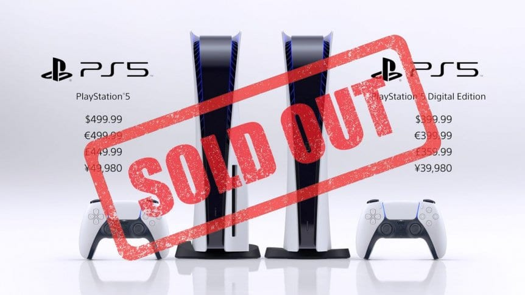
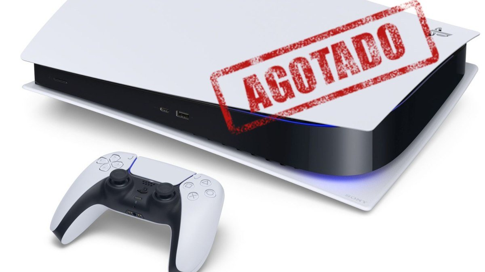

Sony no puede con la demanda de PS5
>
La increíble demanda de la consola hace que sea casi imposible encontrarla disponible en tiendas físicas como electrónicas ya que al haber un stock este te agota en cuestión de minutos. Sony se ha disculpado con sus clientes y ha prometido que para finales de año habrá más consolas PS5 en venta en las tiendas y en manos de aquellos clientes que ya han pagado. Pero nadie sabe realmente si ese será el caso.
¿Pero por qué no se están logrando sacar los pedidos?
Esto está relacionado con dos factores muy decisivos: Primero, la actual pandemia está causando que más gente se quede en casa y juegue a videojuegos. Por consiguiente, la demanda general ha aumentado de manera exponencial. Y en segundo, Sony tiene problemas con su proveedor de chips de Taiwan. Actualmente, sólo una empresa es capaz de producir pistas de chip de siete nanómetros y esta empresa simplemente no puede seguir el ritmo de la producción.
>God of War Ragnarok reaparece a lo grande: nuevo tráiler del regreso de Kratos
God of War: Ragnarok será, salvo enorme sorpresa, uno de los juegos que marcarán la historia de PS5. Cuando hablamos de la saga de Santa Monica Studio lo hacemos de una de las franquicias más míticas de la historia y su quinta entrega va a llegar en el mejor momento. ¿Por qué? Porque tras lo que parecía el final de Kratos y su lucha contra los Dioses griegos en PS3, revivió en PS4 con la cuarta entrega de la saga
Leer maseFootball 2022 recibe una oleada de críticas negativas de usuarios en Steam
eFootball 2022 ya está disponible para descargar gratis en consolas y PC. A las pocas horas del lanzamiento la tienda de Valve indica unas opiniones "Extremadamente negativas" donde muchos fans se quejan de diversos aspectos, desde el limitado contenido -que se espera que se solucione en un futuro- a aspectos técnicos, jugables y bugs. Las redes sociales también empiezan a recoger fallos e imágenes con el rostro de algunas estrellas que, en ocasiones, son un poco irreconocibles
Leer mas
Beta de Battlefield 2042: fecha, horarios y cómo descargar
Battlefield 2042 celebra esta semana su beta abierta. La prueba gratuita está disponible en todas las plataformas: PC, PlayStation 5, PlayStation 4, Xbox Series X/S y Xbox One. La precarga se activó en la mañana del 5 de octubre, por lo que ya se puede instalar. Sin embargo, el acceso no será simultáneo para todos los jugadores.
Leer masYa puedes apartar Horizon Forbidden West y su edición especial para PS4 y PS5
La semana pasada, Sony Interactive Entertainment mostró todas las ediciones de Horizon Forbidden West que estarán disponibles. Si bien las ediciones de colección volaron y sólo duraron pocos minutos en preventa, todavía hay algunas de ellas que puedes conseguir. ¿Quieres saber cuáles y cómo? Aquí te decimos como apartarlas.
Leer masSiguenos a FullGamingNews